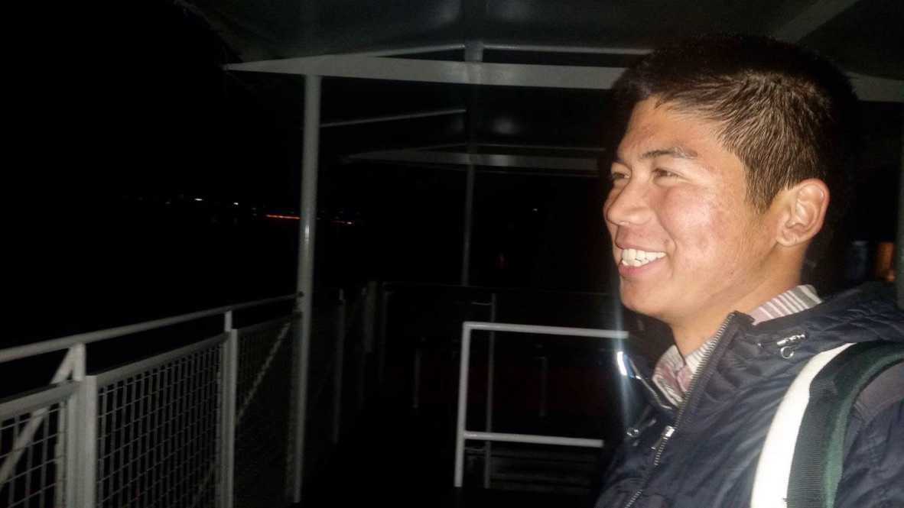

18: Home
After Belgium I spent a night in Prague and took a bus to Hungary the next morning. I stayed in Budapest for 10 days with Eszter, the Hungarian I had a crush on at the beginning of this whole adventure.
It felt strange to be back in the swing of normalcy, as if such a thing was possible after walking the Camino.
I felt no bitterness or resentment toward Marieke. Actually, I was alarmed at how fast I seemed to be “moving on.” It was as if my mind had compartmentalized the Camino experience, like it was all some dream I had just woken from.
With Eszter it felt like nothing had changed, like I hadn’t walked the Camino. We talked with the same depth and intensity as we had in Canada, and I seemed to be living and acting like a normal human being. The feelings I had for her were still there too, which surprised me. Was I already losing the touch of Santiago?
The fact that it was over didn’t hit me until I was back home in California. October 26th, 2017. A teary-eyed Mother was waiting for me in LAX. She told me I looked like a tan monk. At home I hugged my Dad and my brother. I shared brief stories of my experience, then went to bed.
Over the next few days I fell into a state of deep loneliness, despondence, and longing. My friends and parents tried to soothe my grievances, but they couldn’t. How could they? I was falling into a hole that simply didn’t exist in their world. “You’re home now. Shouldn’t you be happy?”
It became clear to me that I missed life on the road. But why? What was it that I missed? The simplicity? The friendships? The solitude? A sense of purpose? Purpose.
I was doing it all wrong. I was trying too hard to return to a place in my mind that was concrete and grounded, trying too hard to refit my life into the straitjacket I had fought so hard to escape from.
Purpose: I had searched the Camino for such a thing, but never found it. Only when I had abandoned my search and surrendered the idea that I could control every inch of my life did I feel content. The less I worried about what the future would bring or what my life meant, the happier I grew.
Purpose is useful. It keeps us afloat in our day to day, year to year existence, until the moment we take our final breath. Until then we have our greatest opportunity and responsibility: we get to choose what is and isn’t meaningful to us, what’s worth and not worth fighting for. Although the grand stage is, in some ways, already set, we get to decide how we want to play the game.
I suppose then I wasn’t ready to decide yet, what was and wasn’t worth dedicating my time and attention to, and I had to be okay with that. I had to be fine with sitting for awhile in the unknown, as terrifying as it was at times. What helped was realizing that it was worse to latch onto a purpose not designed and chosen by me. I needed to be patient with myself.
The world around me had not changed. It was I who was displaced, dislodged, different. I recognized it in the way I perceived things, in the way I talked with my friends, in the way I thought about time. I could feel it in the growing distance between who I thought I was and who I was becoming. Only once I had accepted that I had fundamentally changed, that I had grown, did I begin to find a sense of Home again.
Home. Home isn’t really about a place or its inhabitants. Home begins and grows from the inner wellspring of one’s being. It’s as the cliche goes: home is where the heart is. Home is a landscape we carve from the varieties of experience that so happen to grace us. It is a conversation and collaboration between oneself and the world.
“I did not know that I could only get the most out of life by giving myself up to it.”
I am thinking of this quote now as I ponder my arrival in Santiago. That feeling I had –– of wholeness, interconnectedness, fluidity, shapelessness, of being something outside of myself –– it didn’t last long, but something in me has shifted.
The world seems more beautiful. Perspective is easier to hold and maintain. The everyday feels less mundane and more majestic. Little things don’t bother me as much. Peace and contentment are more accessible.
I know I will still have my bad days and mood swings. I will still have my moments of doubt and paralysis when the darker depths of my mind take hold, moments when I am unable to see the light gleaming over the horizon.
But I know it is always possible to get out, to surrender, to let go and be still, to feel what I feel without attachment, to be impermanent, to be.
This moment. This precious, seamless moment. This is it.
